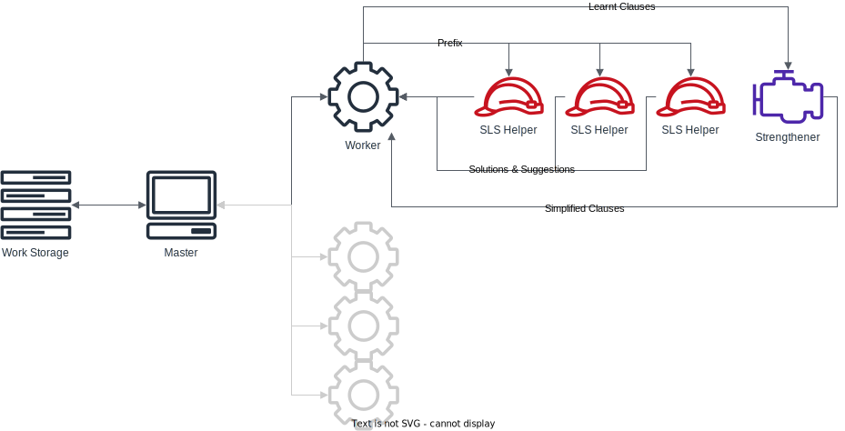

Dagster
Tutorial 4: Extra Example and Deeper Dive
Previously:
Topics:
Case Studies:
- Introduction
- Description of Elements
- Practial Invocation
Case Studies:
- Costas Arrays
- Pentominos
- Determinants
Now:
- More involved Case Study:
Bounded Model Checking - Source Exploration
Case Study
Protocol Model CheckingSplitting by variable fidelity
Model Checking Programs
Can a program error state be reached?Annotate source, compile to SAT problem
CBMC:
https://github.com/diffblue/cbmc

Example run
int main() {
int X_1;
X_1 = X_1 * X_1;
X_1 = (X_1 ^ 1936);
if ((X_1 & 47732)==0) {
__CPROVER_assert(0, "I did a booboo"); // Oh my error state!
}
}
$ cbmc test.c
CBMC version 5.10 (cbmc-5.10) 64-bit x86_64 linux
Parsing test.c
.......................
Solving with MiniSAT 2.2.1 with simplifier
1810 variables, 9230 clauses
SAT checker: instance is SATISFIABLE
Runtime decision procedure: 0.00649107s
** Results:
[main.assertion.1] I did a booboo: FAILURE
** 1 of 1 failed (1 iteration)
VERIFICATION FAILED
Implied freedom
You can do SAT reasoning about logic which you can code (...in principle...)Including emulation of a communication protocol between actors.
Where an error state is where protocol is broken.
Example Pseudocode
int main() {
Communicated_Data X_1;
X_1.append(Actor_1_communicate(X_1));
X_1.append(Actor_2_communicate(X_1));
X_1.append(Actor_3_intercept(X_1));
X_1.append(Actor_1_communicate(X_1));
X_1.append(Actor_3_recieve(X_1));
if (Actor_3_has_secret_key()) {
__CPROVER_assert(0, "Protocol broken");
}
}
Bounded Model Checking with AI variables
Protocols can involve many elements(packets, hashes, ids, etc)
A hack may not depend on specific elements.
Approach: resolve a hack at a lower level of variable resolution, and propagate to higher level.
Abstraction Invariant (AI) variables
Dag idea:
Paper
A lightweight security protocol for ultra-low power ASIC implementation for wireless Implantable Medical Devices by Saied Hosseini-Khayat5th International Symposium on Medical Information and Communication Technology (2011)
Communication Stages
- BASE has a 64-bit message $X$, 32 bit Serial Number $S$ and message counter $B$
- BASE adds one to its message counter $B$
- BASE produces a message $$M_1,M_2=\text{Split}(\text{Interleave}(X,S\Vert B))$$
- BASE sends the message $\{M_1\}_K\Vert\{M_2\}_K$ to IMD
- IMD receives $\{M_1\}_K\Vert\{M_2\}_K$ and decrypts each part with $K$, then joins and de-interleaves to find $X,S,B$
- IMD checks compatible $S$, dropping the message if $S$ is not recognised. It then checks message counter $B$ against its own counter $A$. If $B>A$ it accepts the message and sets $A$ to be equal to $B$, otherwise it drops the message
How is this protocol subject to denial of service attack?
How is this protocol subject to denial of service attack?
the Attacker inserts
$\{M_2\}_K\Vert\{M_2\}_K$
- BASE produces
$M_1,M_2=\text{Split}(\text{Interleave}(X,S\Vert B))$
and sends $\{M_1\}_K\Vert\{M_2\}_K$ - Attacker intercepts $\{M_1\}_K\Vert\{M_2\}_K$ and transmits $\{M_2\}_K\Vert\{M_2\}_K$ to IMD
- IMD receives $\{M_2\}_K$$\Vert\{M_2\}_K$ and decrypts each part with $K$, then joins and de-interleaves to find $Y$$,S,$$S\ne B$
- IMD then verifies the message via $S$ and then sets its message counter $A=S$, bricking the IMD.
demonstration strategy
int main() {
Communicated_Data X_1; bool base_go_1...n; bool IMD_go_1...n;
// Round 1
if (IMD_go_1) X_1.append(IMD_recieve(X_1));
else if (Base_go_1) X_1.append(Base_communicate(X_1));
else X_1.append(Attacker_communicate(X_1));
if ((IMD_go_1) && (IMD_extracted_B < A)) goto bad_ending;
// Round 2
...
// Round 3
...
return 0;
bad_ending:
__CPROVER_assert(0, "Protocol broken");
}
github.com/ThomWillingham/bmc-summer2122
Abstraction Invariants Approach
The attack is valid irrespective of the encryption algorithm, the key $K$, or the size of the variables $A,B,S,X$Only sensitive to (abstraction invariant) control variables that instruct Attacker to send $\{M_2\}_K\Vert\{M_2\}_K$
Abstraction Invariants Approach
Prove attack works at lower fidelity, propagate control variables to problem at higher fidelity, to prove it works there aswell.Practical Demonstration
Source Code Exploration
git tag:tutorial_v_1.0
"Cant you just read code?"

obvious stuff
obvious stuff
"I contain the unit tests"
"I am obligatory GNU licence"
"I am Makefile, I instruct compilation"
obvious stuff
"I contain example run scripts"
"I am your viewer and wizard" (you have seen me before)
"I am Utils" (truly misc functions)
"I contain custom exception classes"
obvious stuff
"I am legacy interface" (dont worry about me)
obvious stuff
"I am class that holds and parses commandline arguments"
obvious stuff
"We are simple data structures"
obvious stuff
"I kick off your tests"
obvious stuff
"I just hold some global flag values for MPI messages"
basic/important stuff
basic/important stuff
"We load/verfy and hold all information about a DAG file, we are static"
basic/important stuff
"We hold/load/access/change all information about a CNF, we NOT static"
Master/Worker/Helpers architecture
Master Storage Stuff
Virtual Class, and two implementations.
"Master uses us for knowing logical work done/to-be-done"
work transposed into/outof messages for workers to complete
Master Storage Stuff
"I just keep track/allocate for master of what messages are being worked on by what workers"
Master Storage Stuff
"I just keep track of statistics for master of what messages are being worked on by what workers"
Master Storage Stuff
"I am the master loop class"
Master Storage Stuff
I am masterI have a to keep stats
and a to organise messages to my workers
and a
to keep track of logic and to generate messages for my workers
Master/Worker/Helpers architecture
Master to worker Stuff
"I am the worker loop"
Master to worker Stuff
"I am the message class"
"I am a communication module, that just wraps around MPI send/recieve calls"
Master to worker Stuff
"I hold/load/generate sub-CNFs for workers to load and work on"
Master to worker Stuff
"I am a virtual class for a CDCL procedure, I take CNFs and give worker solutions"
Master to worker Stuff
I am workerI take and return of work to master, via a
I use a to load and collate CNFs for do work with.
and I interract with an instantiation of a
process my work.
Master/Worker/Helpers architecture
Worker CDCLs
"We are the core TiniSAT procedure"
Worker CDCLs
"We are the core MiniSAT procedure"
Master/Worker/Helpers architecture
Worker Helpers
"We are the gNovelty+ procedure"
Worker Helpers
"We are the Strengthener procedure"
Worker Helpers
"We are the main method"